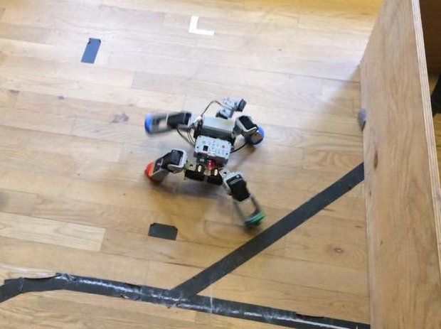
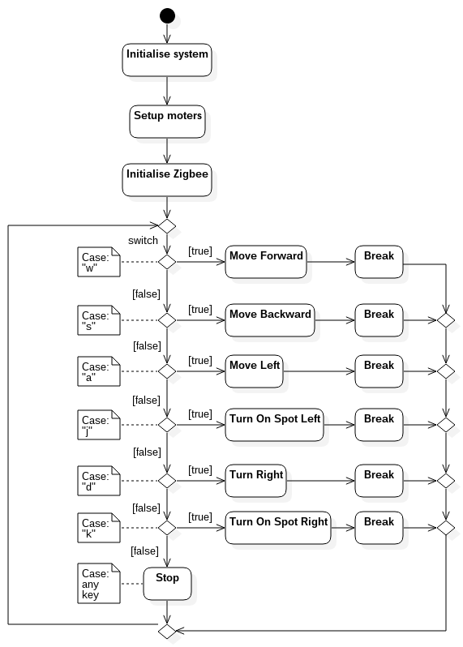
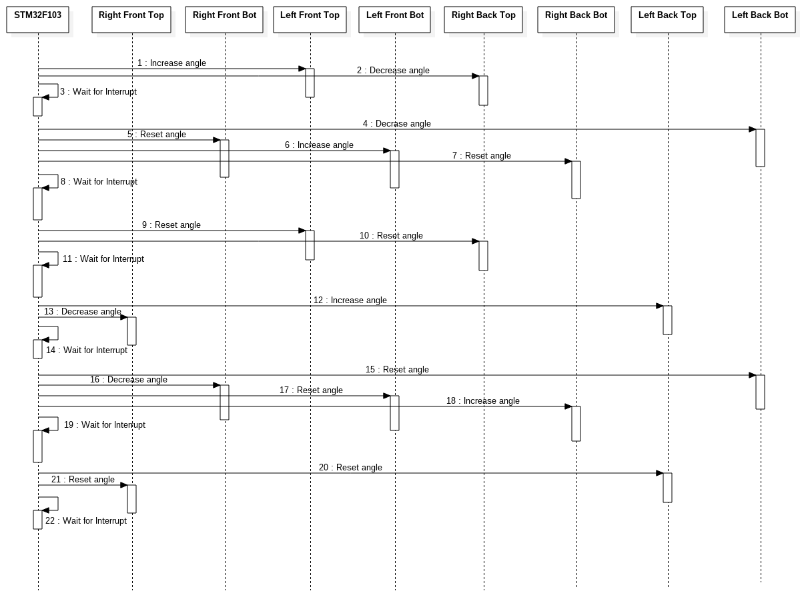

Responsible: Christian Myrhøj (s103045)
Group: Cm3
Course: Modular Robotics (31384) in June 2015
Abstract
In the video it can be seen that our robot completed the course by remote control. By using predefined positions of the legs the robot was able to walk in a stable manner. This included the motions of turning slight to the left and right, turning on the spot to the left and right, and moving backwards. In the following video below the movement of the remote controlled robot can be seen.
Introduction
For this task the robot had to finish a course with no obsticals, had to be remote controlled, and be a walking type robot. The robot then had to compete in an challenge against another robot.

Figure 1: The Beast
Structure
The structure of this robot is a spider-like build, where there is four legs supporting a small frame with the battery and controller. The legs all extend in 45 degrees angles from the frame and create stable platform.
Each leg is fitted with two Dynamixels, one for moving the leg forward or backward compared to the robot, and one for lift the foot of the robot. With a combined lifting and forward/backward motion of the leg it is possible to move the robot in the desired direction which will be described in the Movement section.
Design
For this robot we used a simple state machine reacting on the Zigbee input for control. When the appropriate key is pressed on the computer keyboard the robot changes to the correspondent movement state.
The controls are the following:
Forward "w": Moving the legs in unison for forward motion.
Backward "s": Moving the legs opposite of Forward in order to move backwards.
Left "a": Moving forward but moving the right legs more than the left to turn left.
Turn Left On Spot "j": Moving the left legs forward and right legs backwards to turn on the spot.
Right "d": Moving forward but moving the left legs more than the right to turn right.
Turn Right On Spot "k": Moving the right legs forward and left legs backwards to turn on the spot.
To handle these inputs a switch case were used on the input and the robot then performed the tasks described above. The key that was pressed was then saved as the command and was maintained until any changes occurred. The activity diagram for the robot can be seen below:

Figure 2: Subsumption diagram
With a switch case on the key recieved from the Zigbee, the robot changes to another state and loops around. As mentioned if this key haven't changed the same case will be chosen and continue to do perform that action.
Movement
The movement of the robot is defined by the lifting and movement of the legs, which have to be fairly synchronous in order for it not to fall. For it to move forward example all four legs have to both lift and change position during the steps, making this design a bit more unstable compared to for example a six legged robot which always have a three-point contact.
To illustrate the movement a sequence diagram of the function "move_forward" have been made. This can be seen in the figure below:

Figure 3: Forward movement
This diagram translates to the following motion:
1. Lift the left front and the right back legs.
2. Drag forward with right front and left back leg.
3. Set down the left front and right back legs.
4. Lift the left back and the right front legs.
4. Drag forward with right back and left front leg.
4. Set down the left back and right front legs.
The movement for turning left and right are just a slight modification, where the dragging on the right and left respectively are reduced. When turning on the spot to either side the dragging is done forward and backwards, where it is the front leg that determines the direction. If the right front leg is dragging forward the robot is moving to the left, and vice versa the left front is dragging forward it is a right turn.
Results
For testing the remote controlled robot we started with one configuration of the legs for the robot. This was the initial position of the legs and the angle which the leg is when supporting on it. The first test for the original code, we had a very narrow space between the legs. This meant that the legs couldn't move too much and resulted in that the feet would hit each other during walking and turning.
We optimized the leg initial position and tested the new setup on the track. The test was a time trial of the two position of the legs for comparison with speed in mind. The result can be seen in the figure below: